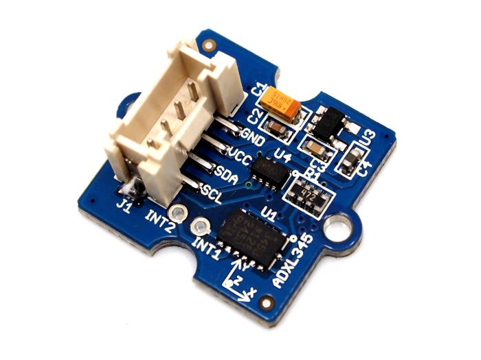
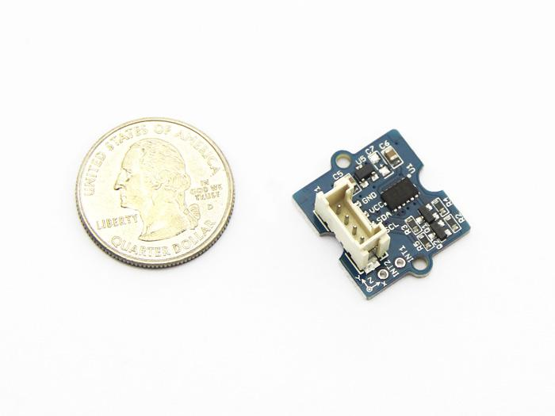
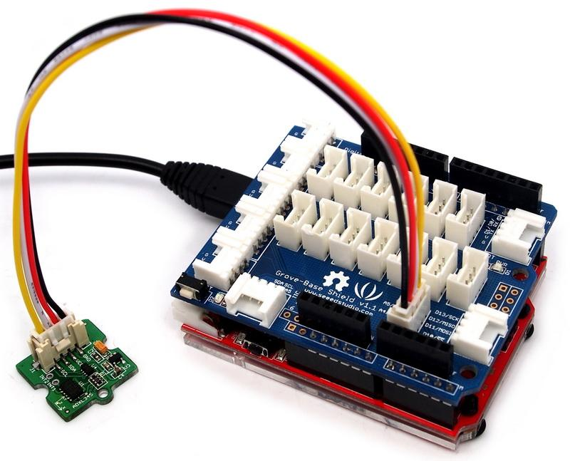
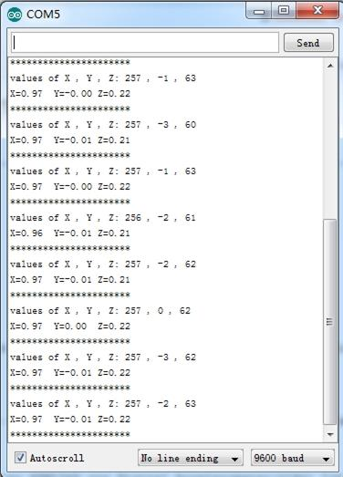

|  |
 |
| Grove - 3-Axis Digital Accelerometer(16g) v1.2
|
Grove - 3-Axis Digital Accelerometer(16g) v1.3
|
This is a high resolution digital accelerometer providing you at max 3.9mg/LSB resolution and large ±16g measurement range. It's base on an advanced 3-axis IC ADXL345. Have no worry to implement it into your free-fall detection project, cause it's robust enough to survive up to 10,000g shock. Meanwhile, it's agile enough to detect single and double taps. It's ideal for motion detection, Gesture detection as well as robotics.
Note:
More details about Suli-compatible Library, please refer to Suli
Every accelerometer has been individually tested before shipping to you. But in rare cases, you might need to reset the zero-offset by yourself.
Here below we show you how to read the raw data and obtain data in the unit of g, AKA g-force, from this accelerometer.

1. Plug it onto the I2C port of your Grove - Base Shield.
2. Download the Digital Accelerometer(±16g) Library .zip and unpack it into arduino-1.0\libraries in your Arduino installation folder.
3. Open the demo code directly by the path:File -> Example ->DigitalAccelerometer_ADXL345->ADXL345_demo_code.
4. Upload the code and open the serial monitor. Please click here if you do not know how to upload.
5. Open the serial monitor to check the result.

The outputs of this sensor consist of two parts: raw data and 3-axis acceleration info converted into the unit of gravity, "g".
1.You should have got a raspberry pi and a grovepi or grovepi+.
2.You should have completed configuring the development enviroment, otherwise follow here.
3.Connection
4.Navigate to the demos' directory:
cd yourpath/GrovePi/Software/Python/
nano grovepi_tilt_switch.py # "Ctrl+x" to exit #
import smbus
from time import sleep
# select the correct i2c bus for this revision of Raspberry Pi
revision = ([l[12:-1] for l in open('/proc/cpuinfo','r').readlines() if l[:8]=="Revision"]+['0000'])[0]
bus = smbus.SMBus(1 if int(revision, 16) >= 4 else 0)
# ADXL345 constants
EARTH_GRAVITY_MS2 = 9.80665
SCALE_MULTIPLIER = 0.004
DATA_FORMAT = 0x31
BW_RATE = 0x2C
POWER_CTL = 0x2D
BW_RATE_1600HZ = 0x0F
BW_RATE_800HZ = 0x0E
BW_RATE_400HZ = 0x0D
BW_RATE_200HZ = 0x0C
BW_RATE_100HZ = 0x0B
BW_RATE_50HZ = 0x0A
BW_RATE_25HZ = 0x09
RANGE_2G = 0x00
RANGE_4G = 0x01
RANGE_8G = 0x02
RANGE_16G = 0x03
MEASURE = 0x08
AXES_DATA = 0x32
class ADXL345:
address = None
def __init__(self, address = 0x53):
self.address = address
self.setBandwidthRate(BW_RATE_100HZ)
self.setRange(RANGE_2G)
self.enableMeasurement()
def enableMeasurement(self):
bus.write_byte_data(self.address, POWER_CTL, MEASURE)
def setBandwidthRate(self, rate_flag):
bus.write_byte_data(self.address, BW_RATE, rate_flag)
# set the measurement range for 10-bit readings
def setRange(self, range_flag):
value = bus.read_byte_data(self.address, DATA_FORMAT)
value &= ~0x0F;
value |= range_flag;
value |= 0x08;
bus.write_byte_data(self.address, DATA_FORMAT, value)
# returns the current reading from the sensor for each axis
#
# parameter gforce:
# False (default): result is returned in m/s^2
# True : result is returned in gs
def getAxes(self, gforce = False):
bytes = bus.read_i2c_block_data(self.address, AXES_DATA, 6)
x = bytes[0] | (bytes[1] << 8)
if(x & (1 << 16 - 1)):
x = x - (1<<16)
y = bytes[2] | (bytes[3] << 8)
if(y & (1 << 16 - 1)):
y = y - (1<<16)
z = bytes[4] | (bytes[5] << 8)
if(z & (1 << 16 - 1)):
z = z - (1<<16)
x = x * SCALE_MULTIPLIER
y = y * SCALE_MULTIPLIER
z = z * SCALE_MULTIPLIER
if gforce == False:
x = x * EARTH_GRAVITY_MS2
y = y * EARTH_GRAVITY_MS2
z = z * EARTH_GRAVITY_MS2
x = round(x, 4)
y = round(y, 4)
z = round(z, 4)
return {"x": x, "y": y, "z": z}
if __name__ == "__main__":
# if run directly we'll just create an instance of the class and output
# the current readings
adxl345 = ADXL345()
axes = adxl345.getAxes(True)
print "ADXL345 on address 0x%x:" % (adxl345.address)
print " x = %.3fG" % ( axes['x'] )
print " y = %.3fG" % ( axes['y'] )
print " z = %.3fG" % ( axes['z'] )
5.Run the demo.
sudo python grove_tilt_switch.py
To begin editing programs that live on BBG, you can use the Cloud9 IDE.
As a simple exercise to become familiar with Cloud9 IDE, creating a simple application to blink one of the 4 user programmable LEDs on the BeagleBone is a good start.
If this is your first time to use Cloud9 IDE, please follow this link.
Step1: Set the Grove - UART socket as a Grove - GPIO Socket, just follow this link.
Step2: Click the "+" in the top-right to create a new file.


Step3: Copy and paste the following code into the new tab
import smbus import time bus = smbus.SMBus(1) # ADXL345 device address ADXL345_DEVICE = 0x53 # ADXL345 constants EARTH_GRAVITY_MS2 = 9.80665 SCALE_MULTIPLIER = 0.004 DATA_FORMAT = 0x31 BW_RATE = 0x2C POWER_CTL = 0x2D BW_RATE_1600HZ = 0x0F BW_RATE_800HZ = 0x0E BW_RATE_400HZ = 0x0D BW_RATE_200HZ = 0x0C BW_RATE_100HZ = 0x0B BW_RATE_50HZ = 0x0A BW_RATE_25HZ = 0x09 RANGE_2G = 0x00 RANGE_4G = 0x01 RANGE_8G = 0x02 RANGE_16G = 0x03 MEASURE = 0x08 AXES_DATA = 0x32 class ADXL345: address = None def __init__(self, address = ADXL345_DEVICE): self.address = address self.setBandwidthRate(BW_RATE_100HZ) self.setRange(RANGE_2G) self.enableMeasurement() def enableMeasurement(self): bus.write_byte_data(self.address, POWER_CTL, MEASURE) def setBandwidthRate(self, rate_flag): bus.write_byte_data(self.address, BW_RATE, rate_flag) # set the measurement range for 10-bit readings def setRange(self, range_flag): value = bus.read_byte_data(self.address, DATA_FORMAT) value &= ~0x0F; value |= range_flag; value |= 0x08; bus.write_byte_data(self.address, DATA_FORMAT, value) # returns the current reading from the sensor for each axis # # parameter gforce: # False (default): result is returned in m/s^2 # True : result is returned in gs def getAxes(self, gforce = False): bytes = bus.read_i2c_block_data(self.address, AXES_DATA, 6) x = bytes[0] | (bytes[1] << 8) if(x & (1 << 16 - 1)): x = x - (1<<16) y = bytes[2] | (bytes[3] << 8) if(y & (1 << 16 - 1)): y = y - (1<<16) z = bytes[4] | (bytes[5] << 8) if(z & (1 << 16 - 1)): z = z - (1<<16) x = x * SCALE_MULTIPLIER y = y * SCALE_MULTIPLIER z = z * SCALE_MULTIPLIER if gforce == False: x = x * EARTH_GRAVITY_MS2 y = y * EARTH_GRAVITY_MS2 z = z * EARTH_GRAVITY_MS2 x = round(x, 4) y = round(y, 4) z = round(z, 4) return {"x": x, "y": y, "z": z} if __name__ == "__main__": # if run directly we'll just create an instance of the class and output # the current readings adxl345 = ADXL345() while True: axes = adxl345.getAxes(True) print "ADXL345 on address 0x%x:" % (adxl345.address) print " x = %.3fG" % ( axes['x'] ) print " y = %.3fG" % ( axes['y'] ) print " z = %.3fG" % ( axes['z'] ) time.sleep(2)
Step4: Save the file by clicking the disk icon with with the .py extension..
Step5: Connect Grove - 3-Axis Digital Accelerometer(±16g) to Grove I2C socket on BBG.
Step6: Run the code. You'll find that the terminal outputs Gravity info every 2 seconds.